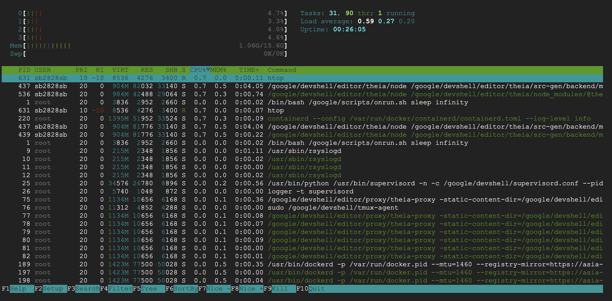
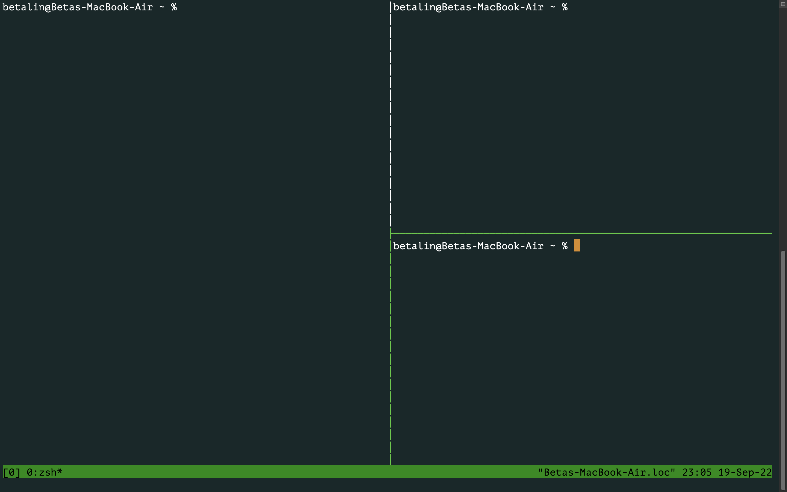
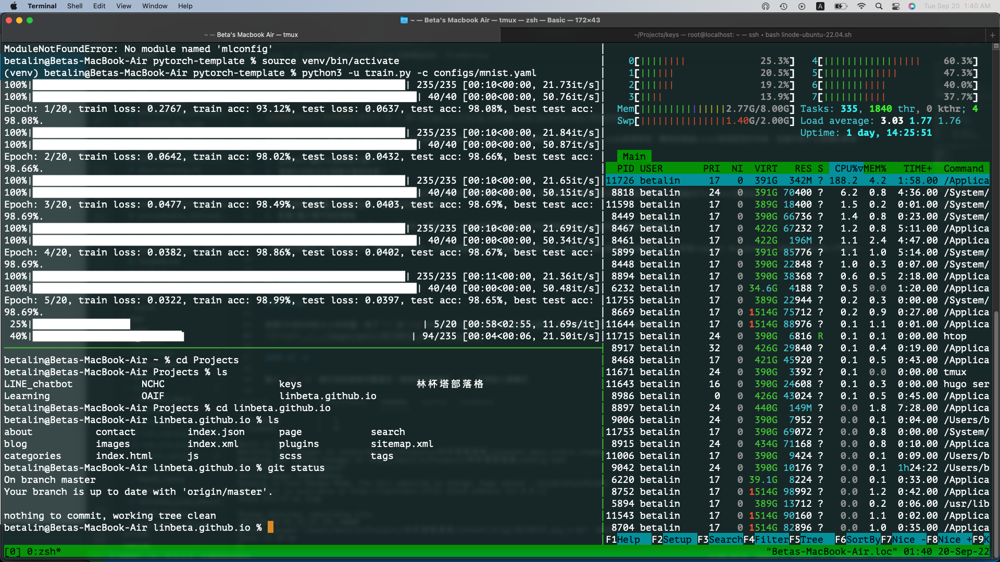
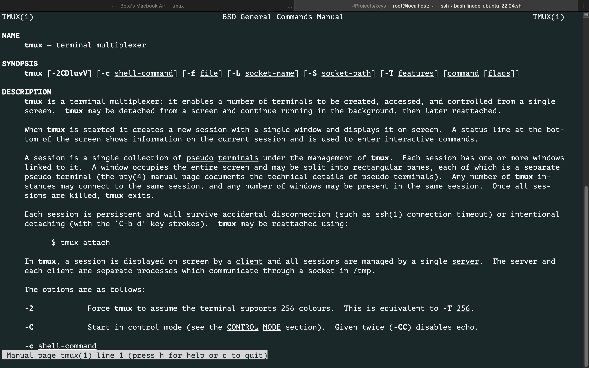
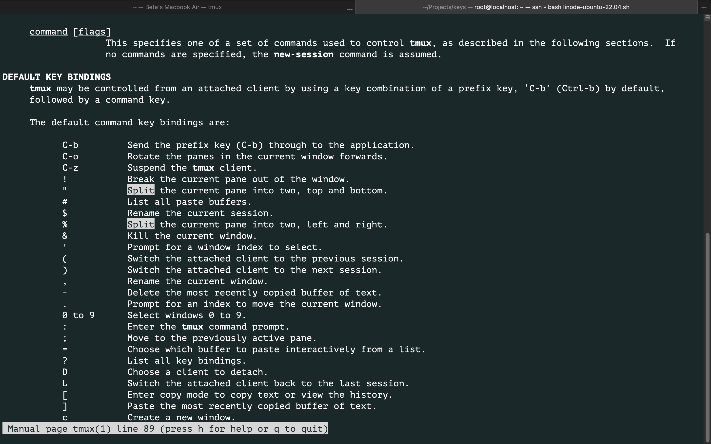
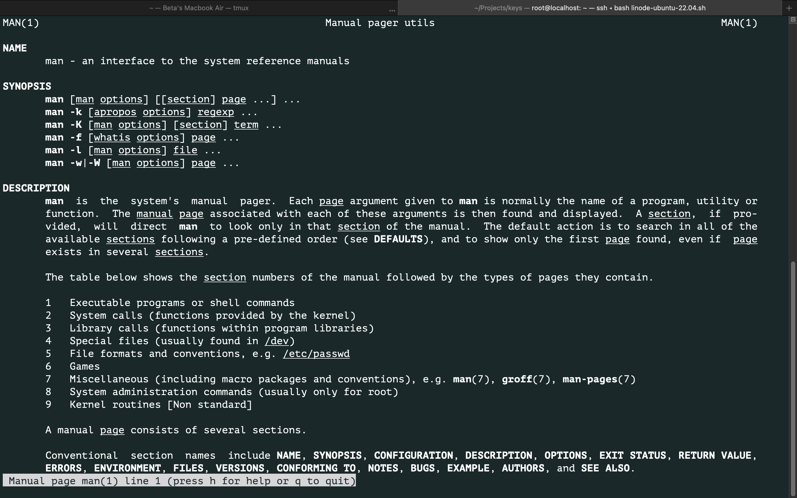

在我學習Python、寫一些小型專案的時候，大多是在自己的Windows電腦上用IDE開發，PyCharm和VS code都算熟悉，轉換到遠端Linux環境開發的時候，有幾件我不太習慣的事情：
上面這些問題我今天應該寫不完，預計會分2~3天，今天先講基礎好上手的幾個指令和工具，明後天來寫比較複雜的進階版，例如安裝Jupyter Notebook和一些些Docker的入門使用。
查看CPU和RAM的大小和用量，底下F1到F10的選項可以互動式的察看更詳細的資訊，看完使用control + c即可退出。

輸入 df -h 顯示系統硬碟用量資訊，通常指令後面的 -h 代表給人類看的
sb2828sb@cloudshell:~$ df -h
Filesystem Size Used Avail Use% Mounted on
overlay 60G 47G 14G 78% /
tmpfs 64M 0 64M 0% /dev
tmpfs 7.9G 0 7.9G 0% /sys/fs/cgroup
/dev/sda1 60G 47G 14G 78% /root
/dev/disk/by-id/google-home-part1 4.8G 224K 4.6G 1% /home
/dev/root 2.0G 1.1G 910M 54% /usr/lib/modules
shm 64M 0 64M 0% /dev/shm
tmpfs 3.2G 1008K 3.2G 1% /google/host/var/run
sb2828sb@cloudshell:~$
如果只輸入df則是顯示預設單位kb
sb2828sb@cloudshell:~$ df
Filesystem 1K-blocks Used Available Use% Mounted on
overlay 62710164 48274844 14418936 78% /
tmpfs 65536 0 65536 0% /dev
tmpfs 8196652 0 8196652 0% /sys/fs/cgroup
/dev/sda1 62710164 48274844 14418936 78% /root
/dev/disk/by-id/google-home-part1 5018272 224 4739572 1% /home
/dev/root 2003760 1072172 931588 54% /usr/lib/modules
shm 65536 0 65536 0% /dev/shm
tmpfs 3278664 1008 3277656 1% /google/host/var/run
sb2828sb@cloudshell:~$
查看作業系統版本，通常Debian和Ubuntu的OS可以使用cat /etc/lsb-release查看詳細資訊，使用cat /etc/*release這個指令讓範圍更廣，列出/etc中所有檔名為release結尾的資料。
其他distro的資訊存在不同路徑，需要用的時候再上網查一下就好了。
root@localhost:~# cat /etc/*release
DISTRIB_ID=Ubuntu
DISTRIB_RELEASE=22.04
DISTRIB_CODENAME=jammy
DISTRIB_DESCRIPTION="Ubuntu 22.04.1 LTS"
PRETTY_NAME="Ubuntu 22.04.1 LTS"
NAME="Ubuntu"
VERSION_ID="22.04"
VERSION="22.04.1 LTS (Jammy Jellyfish)"
VERSION_CODENAME=jammy
ID=ubuntu
ID_LIKE=debian
HOME_URL="https://www.ubuntu.com/"
SUPPORT_URL="https://help.ubuntu.com/"
BUG_REPORT_URL="https://bugs.launchpad.net/ubuntu/"
PRIVACY_POLICY_URL="https://www.ubuntu.com/legal/terms-and-policies/privacy-policy"
UBUNTU_CODENAME=jammy
curl ifconfig.me
首先做Machine Learning和Deep Learning的模型訓練不能不知道 tmux ！
身為菜鳥工程師的我，當初剛on-board還真的傻傻的，開著SSH連線的terminal視窗在train model，然後理所當然的就是放個幾個小時就會自己斷線XDD
人工顧了幾次連線以後覺得實在太困擾了，於是開始搜尋怎樣讓程式可以在背景執行，當時試了 nohop 發現如果監控訓練的log有點麻煩，困擾了一兩天問了公司同事CTO大大才知道有tmux這個好東西！
輸入 tmux 即可啟動，terminal底下會出現一條綠色的資訊列，輸入功能指令可以分割視窗、移動或關閉，也可以設定不同window群組來管理任務。

在tmux中會使用一個prefix key當作功能指令的啟動鍵：control + b
也就是說要使用tmux的功能指令就是先把control + b按下去再接另一個鍵就是了，以下幾個是我常用的基本功能指令，control + b 我就省略不打：
%：垂直接割視窗（分成左右）
"：水瓶切割視窗（分成上下）
上/下/左/右：移動選取視窗
z：zoom-in 放大目前選取的視窗 / zoom-out 縮小回到分割視窗畫面
w：window 可以互動式的選擇分割視窗群組，可預覽查看所有開啟的視窗
c：新開一個視窗
d：detach 可以當作離開tmux的操作介面，讓它自己在背景執行。想回來的時候輸入 tmux attach 或 tmux a 即可重新回到tmux的操作；如果退出後再次輸入 tmux ，則會再幫你開一個新視窗。
&：關閉並結束目前這組視窗
日常Terminal看起來就差不多這麼熱鬧，訓練跑起來就可以detach或切換到其他window / session做其他事，需要的時候再attach回來看看狀況就可以了。
tmux還有很多進階用法，甚至還能夠做客製化的設定、加入滑鼠的操作等等，我把其他大大寫的分享放在底下參考資料。

開啟說明書的指令，例如想查tmux這個軟體有哪些操作選項，輸入man tmux即可進入tmux的互動式說明書，在說明書裡面可以按空白鍵或是f到下一頁，b回上一頁，按q退出。

當然字這麼多誰看得完XD，通常我會直接找關鍵字，舉例要是突然忘記分割視窗要怎麼操作，需要查找分割視窗的指令，進入說明書後按/即可搜尋關鍵字“split”，接著按下一頁就可以看到文件中的split都被反白標示了。

當然man自己也有說明書，想知道更多細節就輸入man man去看看吧！

查看歷史指令紀錄，最近輸入的可以按方向鍵上下查閱，但如果是100個指令以前呢？輸入history可以檢視過去所輸入過的指令，需要重複使用或忘記的時候蠻好用的。
列出來的指令可以選取複製，如果要直接執行，輸入!＋那個指令的數字編號即可快速執行。
SCP是Secure Copy Protocol的縮寫，讓你可以透過SSH連線複製檔案到遠端電腦，或從遠端電腦複製檔案到本地端（下載）。
指令如下：
$ scp [option] path/to/local/file_name user@remote-host:path/to/remote/file_name
如果要傳的是整個資料夾，[opetion]的選項要加個 -r (recursive，代表連資料夾裡面的每一層都包含)。
例如我目前所在路徑有一個檔案test.txt想要上傳到 root@172.104.86.161 這台機器的root資料夾，並且重新命名為test_test.txt，就寫成以下這樣：
$ scp test.txt root@172.104.86.161:/root/test_test.txt